内容要点
一段 21 分 59 秒的达芬奇（DaVinci Resolve）调色入门课，把调色面板、节点系统、色轮、曲线、示波器讲透：①界面：剪辑界面切调色面板；界面乱→顶部工作区→重置用户界面；片段三信息（左上素材编号+状态指示框灰/彩、下方编码可切编号、右上轨道号）。②画廊静帧：素材监视器右键抓取静帧存画廊→导出全分辨率截图（参考/同步调色/团队协作）；LUT=通用调色预设（数字化滤镜）。③节点系统=PS图层思维：装修按功能分区模块化比喻（每功能区=一个节点），单独修改不影响其他模块=非破坏性编辑；节点流向左输入→右输出，新建节点参数复位但继承上一节点结果。④色轮：四滑块（阴影/中间调/高光/偏移）+四色环（暗部/中间调/亮部/全局）；log素材先定两头再调中间；色环拖拽轻柔渐进防失真。⑤辅助工具：白平衡三招（自动A/吸管点白/手动色温色调）；中间调细节20-30；对比度+轴心点配套（log对比度1500上拉轴心点亮透）；色彩增强防色块；饱和度0-100全局；色相染统一色。⑥曲线：S型曲线增强对比胶片感；分通道RGB独立调整（蓝曲提高光天空蓝、绿曲中间调中和偏绿、红曲暗部复古/清透）。⑦复位与对比：多层级复位（参数盘/整体/重置节点/重置所有节点）；Shift+D节点开关键对比。⑧一级vs二级：一级=整体校正（对比度/白平衡），二级=局部区域/特定颜色（抠像/蒙版跟踪）。⑨示波器：Shift+Command+W开启；波形图=亮度地形图（0-1023），log校正白点100%黑点0%，RGB三线重合=白平衡准；矢量示波器=色彩指南针（方向=色相/距离=饱和度），肤色指示线+色彩溢出检查。
知识结构
切调色面板；重置用户界面恢复出厂。
左上编号+状态框（灰/彩）、下方编码、右上轨道号。
抓取静帧存画廊导出；LUT=数字化调色预设。
装修模块比喻=非破坏性编辑；左输入右输出流水线。
四滑块明暗（阴影/中间调/高光/偏移）+四色环色彩；log先定两头再调中间。
吸管点白校准；中间调细节20-30；对比度+轴心点。
S型曲线胶片感；分通道RGB精准校正。
多层级复位；Shift+D前后对比。
一级=整体校正，二级=局部精细（蒙版跟踪）。
亮度地形图0-1023；log白点100%黑点0%校正。
RGB三线重合=白平衡准；渐变灰片实验看S形。
调色时控制对明暗影响，防过曝丢细节。
方向=色相/距离=饱和度；肤色指示线+溢出检查。
节点+色轮曲线+示波器=一级调色；预告二级调色。
达芬奇调色入门=三大板块：①节点系统=PS图层思维，装修模块比喻（每功能区=节点），单独调整不影响其他=非破坏性编辑；流向左输入→右输出，新建节点参数复位但继承上节点结果。②工具链：色轮（四滑块明暗+四色环色彩，log先定两头再调中间）；白平衡三招（自动A/吸管点白/手动色温色调）；中间调细节20-30；对比度+轴心点配套（log 1500+上拉轴心点亮透）；色彩增强防色块；饱和度0-100；色相染统一色；曲线S型增强对比胶片感+分通道RGB精准校正。③示波器=科学调色依据：波形图=亮度地形图（0-1023，log校正白点100%黑点0%，RGB三线重合=白平衡准）；矢量示波器=色彩指南针（方向色相/距离饱和度，肤色指示线+溢出检查）。心法：人眼不可靠（环境光+显示设备偏色），一切以示波器为准；先学会一两核心工具就能解决大部分问题。
00:00-01:40界面切换与重置
开场：「今天我们学达芬奇调色。首先我们从剪辑界面切换到调色面板，你会发现这里和剪辑界面大不相同，原先的时间轴变成了各式各样的调色工具，右上方控制区变成了节点操作区。」
界面恢复：「如果你发现界面乱了，别担心，仔细点击顶部工作区，选择重置用户界面就能一键恢复出厂设置。」
01:40-02:40片段信息识别
三信息区：「在调色时间线上，所有素材会以片段形式横向排列，每个片段都包含三个关键信息区域，帮助我们快速识别和管理素材。」
状态指示框：「注意片段的左上角，这里显示的是素材编号，它外围有一个状态指示框。如果素材没有经过任何调色处理，框线显示为灰色，一旦进行了调整，框线就会变为彩色，让你对调色进度一目了然。」
编码与轨道：「素材下方显示的是片段编码信息，双击这个区域就可以将显示内容切换为素材编号，方便按照你的项目命名习惯。右上角展示的是素材所在的轨道编号，如果你觉得单纯看编号不够直观，可以在节点上方点击这个图标打开时间线缩略图，这样就能看到素材在整体时间线的具体位置。」
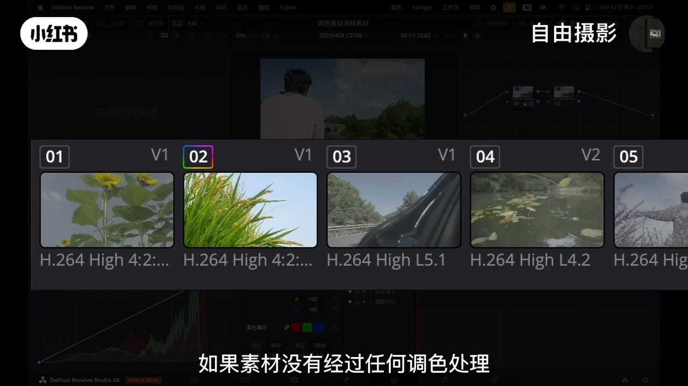
02:40-03:20画廊与静帧
布局：「中间位置是素材监视器，用以实时查看画面效果。左侧区域是画廊，主要用以保存调色静帧和套用LUT。」
静帧操作：「在素材监视器中找到想要截取的画面帧，右键选择抓取静帧，这张图片就会保存到左侧画廊中。之后对图片右键选择导出，选择合适的图像格式就能得到一张全分辨率的截图。」
静帧价值：「静帧功能不仅可以用来参考和同步调色，还能保存管理调色方案，还可以支持团队协作。这个功能在需要分享工作成果或进行技术交流时非常有用。」
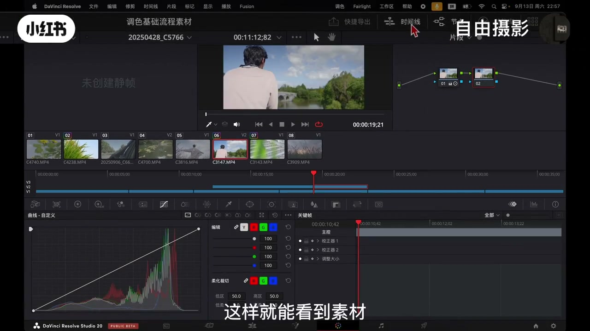
03:20-04:45LUT预设
「同样在左侧区域你还可以加载LUT。LUT本质上是一种通用的调色预设文件，用于快速实现特定的色调风格，可以把它理解为一种高效的颜色管理工具。新手可以理解为调色滤镜，只是这个滤镜跟手机上的滤镜有点不一样，这种属于数字化滤镜。」
04:45-07:00节点系统=装修模块化
图层思维：「节点系统的基本逻辑和PS中的图层概念有相似之处，都是通过分层处理的方式来实现精细化调整。」
装修比喻：「想象一下你正在装修一套房子，如果所有装修顺序水电、泥瓦、木工、油漆都混杂在一起同步进行施工，那么后期如果想单独调整某一处会非常困难。而实际的装修流程通常是按功能分区模块化推进的，卫生间的水电防水是一个模块，厨房的橱柜灶机安装是另一个模块，卧室的墙面照明又是独立的模块。」
独立性：「每个功能区就像节点系统中的一个节点，你可以单独修改卫生间的瓷砖、调整厨房的吊柜高度、升级卧室的灯光设计，而不会影响其他已经完成的部分。这种独立性正是节点非破坏性编辑的核心优势。」
顺序自由：「你还可以调整这些模块的施工顺序，不同的顺序会带来不同的整体效果，但每个模块本身还是保持独立可修改。一个节点专注于人物肤色的优化，另一个节点负责校正白平衡，还有一个节点专门负责调整整体曝光。你可以独立调整任意节点的参数，也可以自由排列它们的先后顺序，不同的节点结构处理流程会直接导致最终画面的视觉效果产生显著差异。」
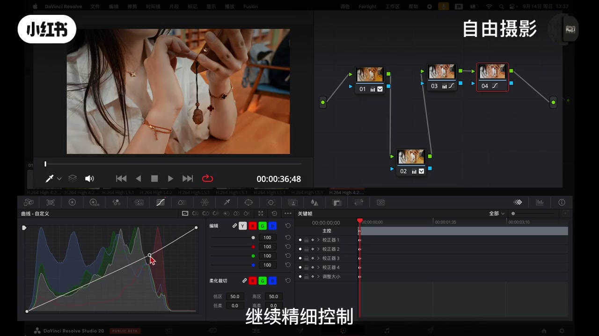
07:00-07:50节点流向
「节点的运作方式：左边是输入点开始，流向右侧输出点结束，中间每一个节点都可以从下方调色工具面板中调整。你可以通过右侧创建新的节点，每新建一个节点所有参数都会复位，让你能够基于上一节点的处理结果继续精细控制。整个流程就像一条视觉处理的流水线，逐步推进、层层叠加，最终合成完整的调色效果。」
07:50-12:30色轮：四滑块+四色环
工具认知：「不要被这么多工具吓到，在实际操作中熟练用好其中一两种核心工具往往能够解决大部分问题。」
四明度滑块：「色轮板块点开后有四个色轮，每个色轮下方都有一个四轮转的明度滑块。最左边的滑块负责画面的明暗区域也就是阴影部分，中间的滑块负责画面中大部分内容比如人的肤色、物体的固有色，这叫做中间调，最右边的滑块负责画面最亮的部分比如天空、灯光等高光区域。而偏移滑块的影响力最大，它会同时改变整个画面所有区域的明暗。」
log还原：「当你的素材是log格式时，这些滑块在画面还原中就起到很大的作用。你可以先遵循先定两头、再调中间的原则，先调整阴影和高光的明度，再处理中间调。调整时要注意避免将暗部拉得过黑或高光调的过量。」
色环色彩：「色轮同样有四个，分别对应画面的暗部、中间调、亮部和全局色彩，和下方的色轮原理相似，不同的是色轮用以校正颜色而非明暗。拖动阴影色轮画面暗部就会偏向你选择的颜色，调整中间调会影响大部分区域比如画面里的树木，调整高光色轮则会影响天空亮部区域的色彩。」
谨慎操作：「这些调整要格外谨慎，因为即使轻微的拖动也会产生明显变化，如果调整幅度过大很容易导致色彩失真、出现不自然的效果，因此建议采用轻柔、渐进的方式操作。」
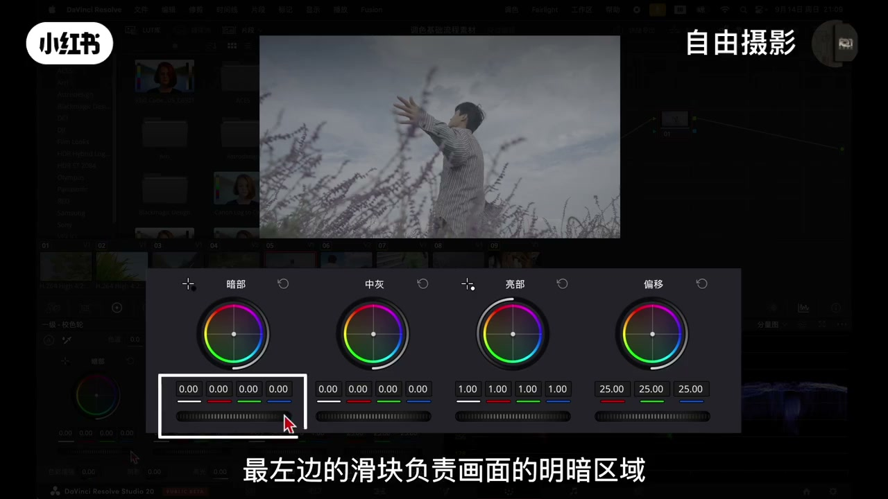
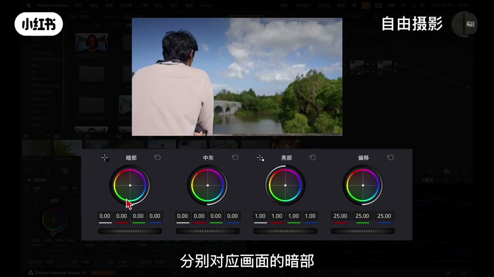
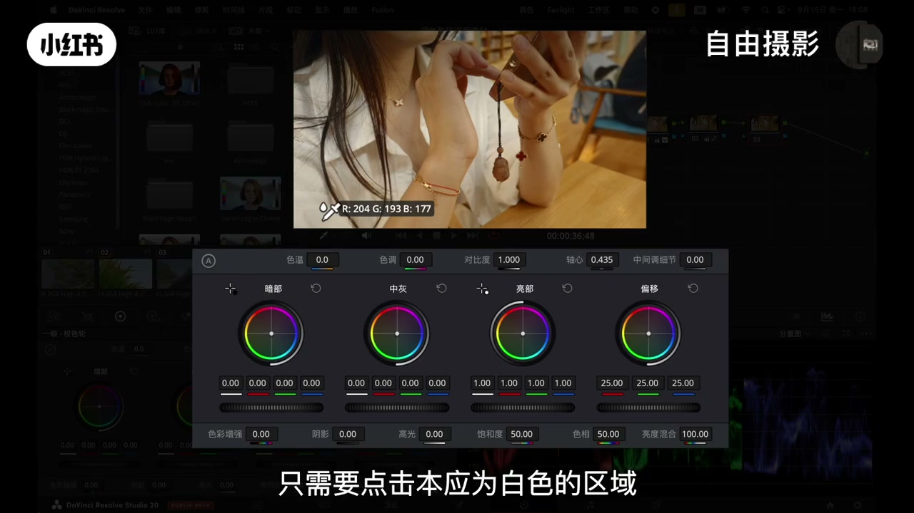
12:30-16:40白平衡与细节工具
白平衡三招：「第一个是带有A标识的自动白平衡，点击后系统会根据画面自动计算白平衡，我个人使用较少，更常用的是旁边的白平衡吸管工具。当画面出现偏色时，只需要点击本应为白色的区域，例如白衬衫或白墙，达芬奇就会自动校准全局白平衡，色温和色调的数字也会相应调整。」
色温色调：「色温滑块向右移动画面会变得更暖更黄如夕阳的氛围，向左则更冷更蓝像阴天效果。色调滑块则用于校正绿色或品红色这类特殊偏色，右滑增加品红，左滑增加绿色。」
中间调细节：「向右调整可以增强中间调区域的局部对比度，使画面显得更锐利、更有质感，但需要注意强度，下手过重或拉到110会导致画面显脏或出现晕影，通常建议将数值控制在20-30之间效果会更加自然。」
对比度轴心点：「对比度和轴心点是一对需要配合使用的参数，在不调整对比度的情况下单独移动轴心点是不会产生作用的。以log素材为例，将对比度提高到1500后，上拉轴心点会使画面偏向明亮通透，下拉则会让整体显得更暗更黑。轴心点的作用是设定对比度变化的基准位置，相当于一个支点，适当调整它可以使对比度变化更自然，避免丢失暗部细节。」
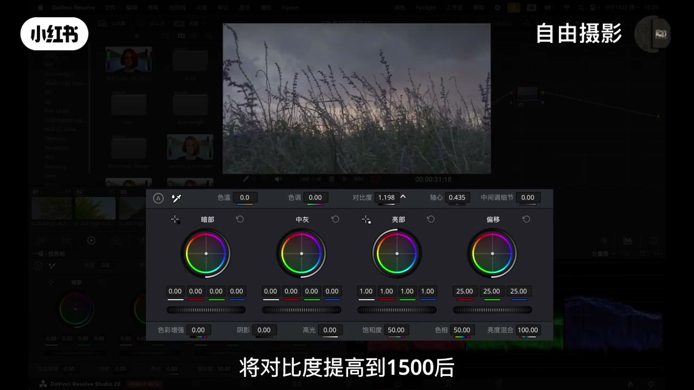
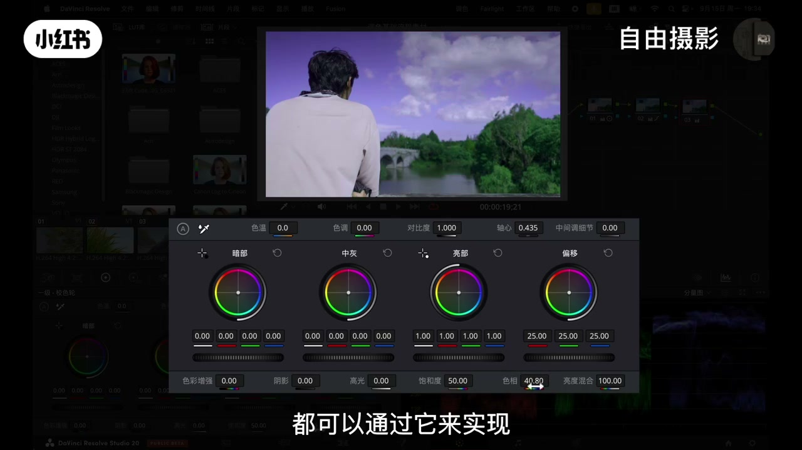
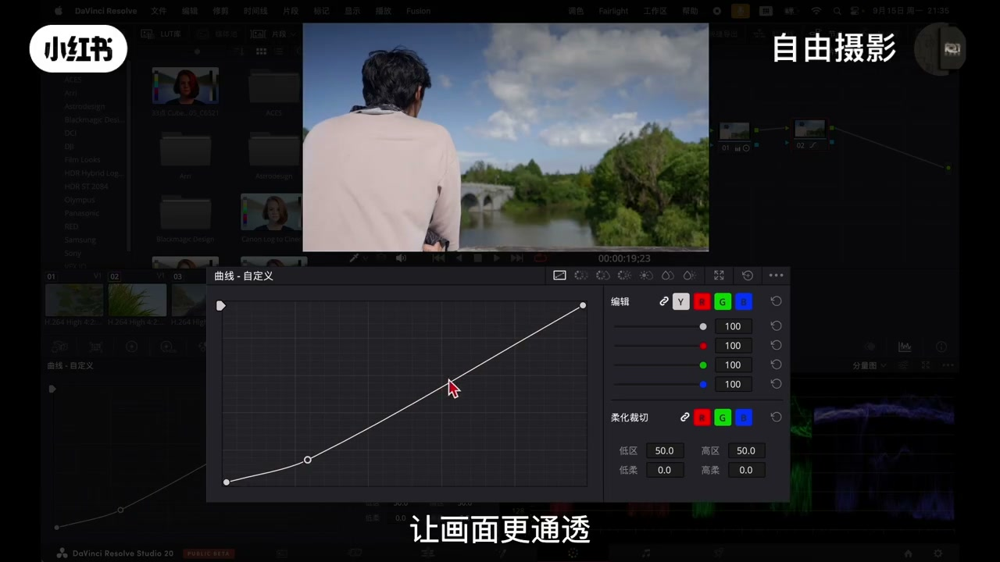
16:40-20:20色轮下方工具+曲线
色彩增强：「它不同于普通的饱和度工具，能够智能的提升那些饱和度不足的颜色，而对已经鲜艳的色彩影响较小，这样调出来的画面不容易出现色块或色彩断层。」
阴影高光：「这两个可以看作是主色轮中阴影和高光控制的精细版本，当你觉得主色轮的调整不够精准时，可以用它们来专门微调暗部或高光区域的色彩，而不会影响画面的其他部分。」
饱和度色相：「饱和度工具是最直接、最全局的饱和度调整方式，从零完全黑白到100的极度浓艳，可以实现全画面饱和度的统一调整。色相工具可以为整个画面染上一层统一的颜色，是创造强烈风格化色调的利器，无论是复古的暖黄调还是科幻的冷蓝调都可以通过它来实现。」
S曲线：「曲线图横轴从左到右表示暗部到亮部的亮度分布。最经典的用法是S型曲线，可以有效增强画面对比，让画面更通透、更具胶片感。」
分通道：「曲线调色的另一精髓是可以分别对红、绿、蓝三个通道进行独立调整。如果天空的高光区域蓝色不足，可以在蓝色曲线的高光部分适当提升让天空更蓝。若画面中间调区域如树木或皮肤偏绿，可以通过绿色曲线中间调位置向下调整引入品红进行中和。对于暗部阴影区域，想要复古效果的可以适当提升红色曲线暗部，想要干净清透的效果那么可以降低暗部红色。」
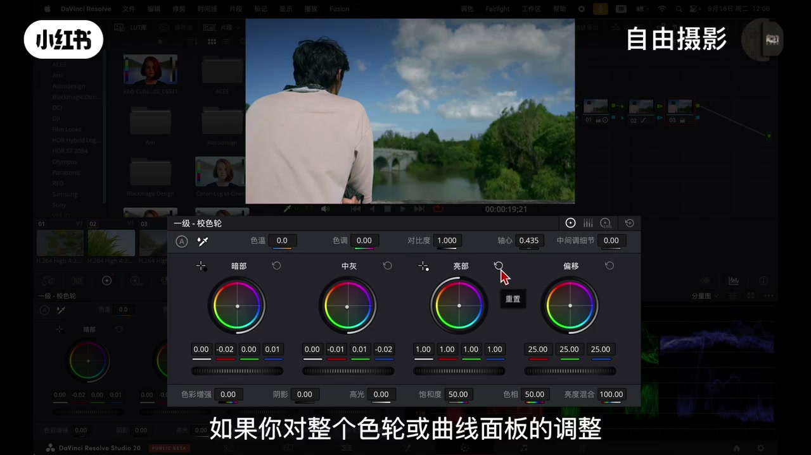
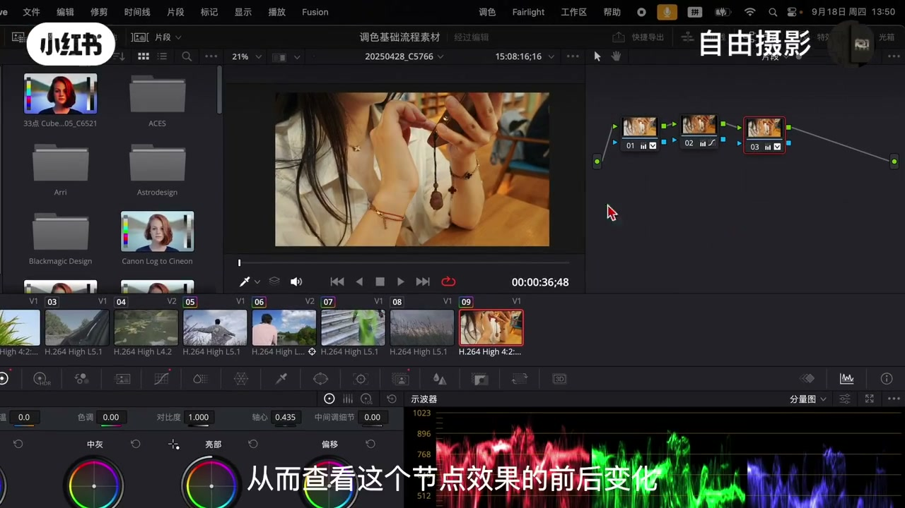
20:20-22:40复位与前后对比
多层级复位：「达芬奇提供了多层级的恢复功能。如果对某个具体参数调整效果不理想，点击对应的复位图标即可快速恢复该参数的初始状态。如果你对整个色轮或曲线面板的调整不满意，可以在功能区右上角点击整体复位按钮。若你认为当前这个节点调色有问题，可以在节点上右键选择重置节点选项，这个节点的所有调色效果就会被清除。如果遇到素材需要完全重新调色的情况，只需在节点图的空白区域右键选择重置所有节点，即可清除全部调色信息从头开始。」
前后对比：「第一种是针对单个节点，通过点击节点下方的数字位置来切换该节点的开启与关闭，从而查看这个节点效果的前后变化。第二种是针对整个节点画面所有的调色效果，可以点击素材监视器窗口上的圆形开关按钮，或使用快捷键Shift加D。」
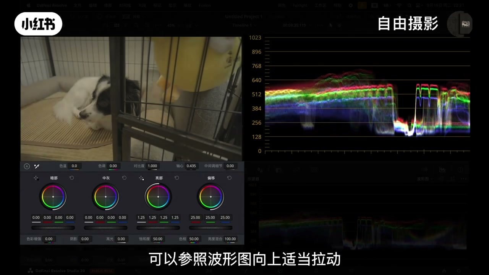
22:40-24:30一级vs二级调色
「一级调色只对画面整体进行色彩和影调的基本校正，例如对比度调整、白平衡修正等都属于这个范畴。而二级调色则更进一步，是针对画面中局部区域或特定颜色进行的精细调整，在实际操作中二级调色经常会结合抠像、蒙版跟踪等技术，用于单独调整某一区域或某个色彩的属性。」
「在掌握了基础调色工具之后有一个非常重要的知识点：仅依靠人眼的视觉感受进行调色是不可靠的，因为眼睛容易受到环境光线的影响，而显示设备本身也可能存在色偏或亮度不准的问题，因此我们需要借助更科学的工具来辅助判断，这就是示波器。」
24:30-30:00波形图：亮度地形图
开启：「在界面上方点击工作区，选择视频示波器，然后点击开启按钮，或使用快捷键Shift加Command加W来开启界面。」
波形图本质：「你可以把它理解为画面的亮度地形图，不显示颜色信息，只反映每个像素的亮度值。波形图的数值范围是0-1023，最底部代表绝对黑色，最顶部代表绝对白色。如果波形集中在顶部说明画面整体过曝，如果都压在底部则说明画面死黑一片。」
log校正：「拿一段log灰片素材为例，在波形图上表现为暗部分值较高、整体亮度偏暗。为了让画面中白色物体呈现正确的白色，可以参照波形图向上适当拉动色轮的亮部滑块，使波形的最高点接近但不超过顶部100%刻度线。接着调整暗部滑块向下拉动，直到波形的最低点轻微接触0%刻度线，确保最暗部位调到黑但不过度。」
死黑死白：「如果调整时超出0%的范围会导致暗部区域完全失去细节形成死黑，画面也会显得脏污不自然。如果亮部超出100%范围就会形成死白，同样也会丢失所有细节。」
RGB重合：「波形图还可以显示RGB三个色彩通道，当拍摄受到灯光影响导致画面偏色时，在波形图上你会看到三个分散的波形，这时可以使用调色工具调整偏色，直到三条线重合，即可获得白平衡准确的画面。」
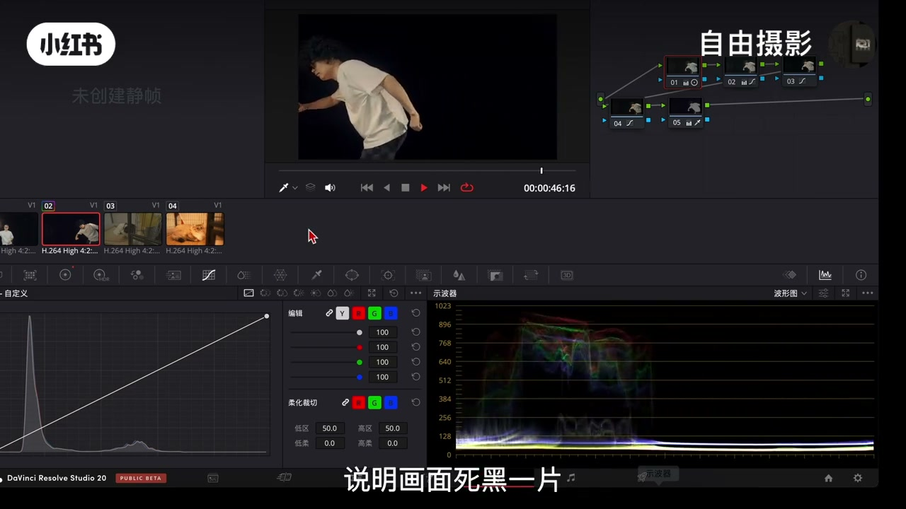
30:00-34:30渐变灰片实验+亮度混合
实验方法：「回到剪辑界面，点击特效库，在生成器中找到渐变选项，将它拖到时间线上，右键选择新建复合片段，之后进入调色界面打开波形图，你会看到一条斜线，这是一个从纯黑到纯白的线性渐变画面。通过这个界面我们可以更直观的观察不同调色工具对亮度范围的影响，例如调整对比度时波形会呈现典型的S形曲线，暗部被压低、高光被提升。而调整轴心点时可以清晰看到它对亮部和暗部的分配的变化。」
亮度混合：「亮度混合控制的是亮度信息与色彩信息的混合方式，通过调整亮度混合参数，可以在色彩调整的同时控制它对画面明暗的影响，有助于保持画面原有的对比关系和层次。」
过曝案例：「假设画面中绿色较多，我们希望减少绿色让夕阳氛围更浓郁，当我们降低亮部的绿色后夕阳会变得更暖更紫红，但可能同时会出现曝光过度、细节丢失的问题，波形图也会超出顶部范围。这时将亮度混合数值调低，波形会整体回落，夕阳的细节也会恢复，画面也更加平衡。」
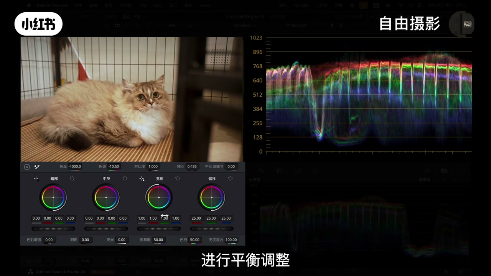
34:30-39:00矢量示波器：色彩指南针
本质：「矢量示波器不关心亮度信息，只关注两个问题：画面中有哪些颜色以及它们的饱和度如何。它呈现为一个圆形的彩色色盘，中心为白色圆点，圆点代表没有任何色彩即黑白灰中性色。方向代表色相，从中心向外辐射的轴向分别对应六种基本颜色：红、绿、蓝、黄、青、品红。某个点所指的方向就表示画面中存在这个色相，距离代表饱和度，点离中心越远说明这个颜色饱和度越高越鲜艳。如果所有点都集中在中心附近，那么说明画面接近黑白。」
肤色判断：「可以在矢量图右上角开启肤色指示线，这条线会在红与黄之间产生斜线，健康肤色的信号点分布在这条线周围。如果点偏向绿说明肤色偏绿，若偏向品红则表示偏紫。借助这一工具你可以更客观的调整肤色，减少对屏幕显示的主观依赖。」
溢出检查：「如果发现信号点过于靠近甚至超出最外圈的彩色边界，就表示颜色饱和度过高，会出现超出显示范围的失真。通常是让信号点保持在色盘内部避免触边，来保证色彩自然不溢出。」
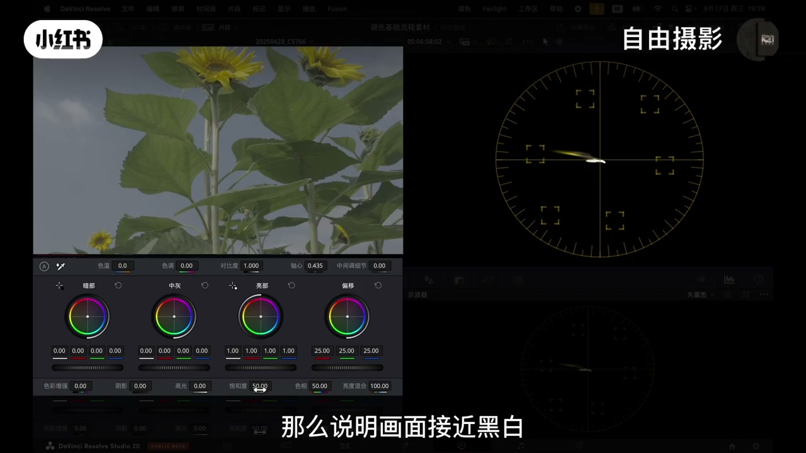
39:00-39:40总结与二级调色预告
「现在你已经掌握科学调色的基本测量工具，以及达芬奇调色最核心的基础流程，包括节点管理和初步的色轮与曲线操作，以及借助示波器完成一级调色和画面校正。你已经能够判断画面是否正确、色彩准确、曝光正常、画面干净，但这样的画面还是缺乏风格和电影感，如何让画面更具美感与情绪，就是我们接下来要深入的主题：二级调色。」
完整转录（207段）
以下文本由 Whisper medium 模型自动转录，可能存在少量识别误差，已尽可能修正。
大家好 欢迎来到自由摄影 今天我们选达奔起调色
首先 我们从剪辑界面切换到调色面板 你会发现这里和剪辑界面大不相同
原先的时间轴变成了各式各样的调色工具 右上方控制区变成了节点操作区 如果你发现界面乱了 别担心
仔细点击顶部工作区 选择重置用户界面就能一键恢复出厂设置
在调色时间线上 所有素材会以片段形式横向排列 每个片段都包含三个关键信息区域
帮助我们快速识别和管理素材 在这里 大家注意一下片段的左上角
这里显示的是素材编号 它外围有一个状态指示框 这个设计非常贴心 如果素材没有经过任何调色处理
框线显示为灰色 一旦进行了调整 框线就会变为彩色 让你对调色进度一目了然
素材下方显示的是片段编码信息 你可以双击这个区域 就可以将显示内容切换为素材编号 方便按照你的项目命名习惯进行识别
右上角展示的是素材所在的轨道编号 如果你觉得单纯看编号不够直观 可以在节点上方点击这个图标 打开时间线微缩视图
这样就能看到素材在整体时间线的具体位置
你还可以在左侧直接点击轨道符号来关闭特定轨道 被关闭的轨道上 所有素材都会在上方试读中隐藏
这个功能在复杂项目中特别使用 当然用不到的时候可以选择关闭
中间位置是素材监视器 用以实时查看画面效果 左侧区域是画廊 主要用以保存调色竞争和套纳特
在开始前 这里要特别强调一个功能 如何在达分级中截取高质量的竞争画面
竞争功能不仅可以用来参考和同步设调 还能保存管理调色方案 还可以支持团队协作
分隔统一 操作很简单 只需在素材监视机中找到想要截取的画面真
右键选择抓起竞争 这张图片就会保存到左侧画栏中
之后 对图片右键选择导出 选择合适的图像格式就能得到一张全分辨率的截图
这个功能在需要分享工作成果或进行技术交流时 非常有用
同样在左侧区域 你还可以加载LUT LUT本质上是一种通用的调色预设文件 用于快速实现
特定的色调风格 可以把它理解为一种高效的颜色管理攻击
新手可以理解为调色滤镜 只是这个滤镜跟手机上的滤镜有点不一样 这种属于数字化滤镜
接下来 我们来观察调色界面的右侧区域 这里存在着达分级调色的功能的核心
节点系统节点界面初看可能显得复杂
但它的基本逻辑 以ps中的图层概念有相似之处 都是通过分层
分层处理的方式来实现精细化调整 为了让大家更直观理解节点的工作方式和实际价值
我们通过一个案例来说明 想象一下你正在装修一套房子 如果所有装修顺序 水电
尼瓦木工油漆都混杂在一起 同步进行施工
那么后期如果想单独调整某一处会非常困难 而实际的装修流程通常是按功能分区模块化推进的
比如卫生间的水电以防水是一个模块
厨房的储柜以造机安装是另一个模块 卧室的墙面以照明又是独立的模块
每个功能区就像节点系统中的一个节点 你可以单独修改卫生间的瓷砖
调整厨房的吊柜高度 或者升级卧室的灯光设计 而不会影响其他已经完成的部分
这种独立性正是节点非破坏性编辑的核心优势
你还可以调整这些模块的施工顺序 比如先做厨房
再做卫生间 最后处理卧室 不同的顺序会带来不同的整体进度和效果 但每个模块本身还是保持独立可修改
在达本级的节点系统中 每个节点也承担着类似的独立功能
一个节点专注于人物肤色的优化 另一个节点负责校正白平衡 还有一个节点专门负责调整整体曝光
你可以独立调整任意节点的参数 也可以自由排列他们的先后顺序
不同的节点结构以处理流程会直接导致最终画面的视觉效果产生显著差异
那节点的应做方式 左边是输入点开始 流向右侧输出点结束 中间每一个节点都可以从下方调色工具面板中调整所需要的数据
你可以通过右侧创建新的节点 每新建一个节点 所有参数都会复位
让你能够记忆上一节点的处理结果 继续精细控制
整个流程就像一条视觉处理的流水线 逐步推进 层层叠加 最终合成完整的调色效果
现在我们来看界面下方这个功能丰富的调色工具区
不要被这么多工具吓到 在实际操作中 熟练用好其中一两种核心工具往往能够解决大部分问题
我们来看一下下方的工具区 最常用的 比如射轮板块 点开后有四个射轮 每个射轮下方都有一个死轮转的明度滑块
我们第一步可以先忽略上方的色彩环
专注于理解这四个滑块的作用 它们的分工非常明确 最左边的滑块负责画面的明暗区域
也就是阴影部分 中间的滑块负责画面中大部分内容
比如人的肤色 物体的固有色 这叫做中间调 最右边的滑块负责画面最亮的部分 比如天空
灯光等高光区域
而偏移滑坏的影响力最大 它会同时改变整个画面所有区域的明暗
当你的素材是log格式时 这些滑块在画面还原中就取到很大的作用
你可以先遵循先定两头 再调中间的原则 先调整阴影和高光的明度
在处理中间调调整时 要注意避免将暗部拉得过黑或高光调的过量
具体以什么为标准 将会在后面讲解 如果你的素材是直出色彩 这可以直接使用设轮进行调整
设轮同样有四个分别对应画面的暗部 中间调 亮部和全级色彩
以下方的齿轮原理相似 不同的是设轮用以校正颜色而非明暗
上方的色彩环可以通过鼠标拖拽来调整
你会看到画面中对应七一的色彩随之变化 比如拖动阴影色轮
画面暗部就会偏向你选择的原色 调整中间调会影响大部分区域 比如画面里的树木
调整高光色轮则会影响天空亮部区域的色彩 需要注意的是这些调整要格外谨慎
因为即使轻微的拖动也会产生明显变化 如果调整幅度过大 很容易导致色彩失真
出现不自然的效果 因此建议采用轻柔 静静的方式操作 足够达到理想的色彩效果
在达芬奇的调生面板中 四个主色轮的上方和下方各分布着六个辅助控制工具 他们为色彩调整提供了更精细的控制维度
我们先来看设轮上方的六大精度调解器 第一个是带有a标式的自动白平衡
点击后 系统会根据画面自动计算白平衡 当我个人使用较少 更常用的是旁边白平衡西广攻击
当然画面出现偏色时 只是要点击本应为白色的区域 例如
白衬衫或白墙 达芬奇就会自动校准全级白平衡 摄温和色调的数字也会相应调整 当然
你也可以手动调节摄温和色调滑快 摄温滑快向右移动 画面会变得更暖
更黄 如夕阳的氛围 向左则更冷 更蓝 像阴天效果
色调滑快则用于校正绿色或品红色 这类特殊偏色 右滑增加品红 左滑增加绿色
这里我们先看最后的中间调细节 向右调整可以增强中间调区域的局部对比度 使画面显得更锐利
根据质感 细节也会更加突出 但需要注意强度 例如下手过重或拉到110导致画面显脏或出现阴晕
通常即将数值控制在20-30之间 效果会更加自然
再回过头来看 对比度和轴心点 这两者是一对需要配合使用的参数
在不调整对比度的情况下 单独移动轴心点是不会产生作用的
那对比度本身控制的是整个画面的明暗反差 左滑则让画面更柔和
右滑让整体明暗反差更大 比如现在将对比度向右拉 调整到1200 此时在调整轴心点
效果就会显现出来 为了让大家看得更直观一点 以log素材为例 将对比度提高到1500后
上拉轴心点会使画面偏向明亮
空透下拉则会让整体显得更暗 更黑
轴心点的作用是设定对比度变化的机种位置 相当于一个支点 适当的调整它 可以使对比度变化更自然 避免丢失暗部细节或高光部分过暴
接下来我们来看色轮下方的六个工具 第一个是色彩增强
它不同于普通的饱和度工具 能够智能的提升那些饱和度不足的颜色 而对已经鲜艳的色彩影响较小 这样调出来的画面色彩更丰富自然
不容易出现色块或色彩断层
接下来是阴影和高光工具 这两个看作是主色轮中阴影和高光控制的精细版本
当你觉得主色轮的调整不够精准时 可以用他们来专门微调暗部或高光区域的色彩
而不会影响画面的其他部分 然后是饱和度工具 这是最直接 最全极的饱和度调整方式
从零完全黑白到100的极度浓烟 可以实现全画面饱和度的统一调整
在实际操作中 可以适度的以前面的色彩增强搭配使用 获得更好的效果
接着是摄像工具 它可以为整个画面染上一层统一的颜色
是创造前列风格化色调的利器 无论是复古的暖黄调还是科幻的冷狼调
都可以通过它来实现 最后是亮度混合 这个亮度混合咱们后面再讲
接下来我们来看最右侧的曲线工具 曲线是调色中最核心且最强大的功能之一
它能够以极高的精确度和灵活性帮助我们对画面实现精细控制
简单来说 曲线通过调整图像亮度以色彩信息的分布 可以精准的改变画面的对比度
色彩和影调关系 我们先来理解曲线图的基本结构 横轴从左到右表示暗部到亮部的亮度分布
左侧代表暗部 右侧代表亮部 中间部分代表中间调 首先是自定义对比度以影调调整
也就是常用的亮度曲线 这是曲线最基础 也是最重要的功能
最经典的用法是s型曲线 可以有效的增前画面对比 让画面更通透
更具胶片感 当然这只是最基础的用法 曲线的可塑性很强 还有更多高级的调整方式
曲线调色的另一精髓是可以分别对红
绿蓝三个通道进行独立调整 实现精准的色彩校正以分格化创作
例如如果天空的高光区域蓝色不足 可以在蓝色曲线的高光部分适当提升 让天空更蓝
如果感觉太蓝 也可以稍微往下拉 让天空呈现青蓝色调
同样 若画面中间调区域如树木或皮肤偏绿
可以通过绿色曲线中间调线下调整 引入品红进行中和 如果偏品红 可以向上提升绿色
对于暗部阴影区域 想要复古效果的 可以适当提升红色曲线暗部
想要干净清透的效果 那么可以降低暗部红色
这种方法的优势在于能够针对特定亮度范围进行校正
例如仅调整高光偏色而保留暗部的色彩 比全级白平衡调整更加精准
在掌握曲线调色的基本操作后 还有一些使用的操作技巧可以帮助你更高效地进行调整
这里分享两个技巧在时操时马上就可以用到的
第一个技巧是关于参数复位 达芬奇提供了多层级的恢复功能 方便在不同情况下撤销操作
在调色工具区域 你会看到很多参数盘带有护卫图标 通常是一个弧形箭头
如果对于某个机里参数调整效果不理想 点击对应的护卫图标即可快速恢复该参数的初始状态
如果你对整个设轮或曲线面板的调整不满意 希望全部重新开始 可以在此功能期右上角点击整体
护卫按钮 若你认为当前这个节点调色有问题 可以在节点上右键选择重置节点选项 这个节点所有调色效果就会被清除
而如果遇到素材需要完全重新调色的情况 例如方案
方向需要彻底调整 只需在节点读的空白区域右键
选择重置所有节点 即可清除全部调色信息 那么就可以从头开始
第二个技巧用于快速对比调色效果调整完成后 如果需要实时查看调色前
以调色后的画面差异 可以使用以下两种方式
第一种是针对单个节点 可以通过点击节点下方的数字位置来切换该节点的开启
已关闭 从而查看这个节点效果的前后变化
第二种是针对整个节点画面所有的调色效果 可以点击素材监视器窗口上的圆形
开关按钮或使用快捷键shaf的家地
这两种操作都可以快速切换单前节点的开启已关闭状态 方便实时查看对比调整前后的画面效果
在调色过程中会经常用到之前介绍的曲线和摄轮属于调色的基础操作模式 但其中还有更多的进阶功能
例如在曲线面板中 你可以注意到一排小图标按钮点击后可以展开纸界面
其中提供了多种不同的曲线模式 这些高级曲线攻击的主要作用可以帮助你进行二级调色
这里需要理解一级调色以二级调色的区别 一级调色只对画面整体进行色彩和影调的基本校正
例如我们之前提到的对比度调整 白平衡修正等都属于这个范畴
而二级调色则更进一步是针对画面中局部区域或特定颜色进行的精细调整
在实际操作中 二级调色经常会结合抠向
门板跟踪等技术 用于单独调整某一区域或某个色彩的属性
曲线右侧还有很多二级调色功能 例如
摄像对亮度 饱和度对饱和度等 建议你可以先尝试操作这些功能 熟悉它的基本效果和调节方式
在后续的教程中 我们会结合具体画面案例 详细讲解二级调色的具体应用和技巧
在掌握了机组调色工具之后 有一个非常重要的知识点需要理解 无论你是使用设轮
曲线还是其他调色工具 仅依靠人眼的视觉感受进行调色是不可靠的
因为眼睛容易受到环境光线的影响 而显示设备本身也可能存在设边或亮度不准的问题
这些因素都会导致最终输出结果出现偏差 因此我们需要借助更科学的工具来辅助判断 这就是试播器
试播器的作用是通过读取画面的元素剂 将色彩和亮度信息分解为可视化的图形 从而更准确直观的体面画面的真实状态
我们可以在界面上方点击工作区 选择视频 试播器 然后点击开启按钮 或使用快捷键
shaf的加command加w来开启界面 那么最常用的试播器是波形图和实量图
我们先来讲波形图 你可以把它理解为画面的亮度地形图 不显示颜色信息 只反映每个像素的亮度值
波形图的数值范围是0-1023 最顶部代表绝对黑色 最顶部代表绝对白色
如果将波形图叠加在画面上 可以看到它其实就是画面亮度的地图
此时我拿了一盏灯 在画面中从左移动到右边时 波形图中亮度的像素也会相应移动 非常直观
如果画面周围很暗 人物从画面中走过 波形图就会显示出相应的亮度变化
观察波形图时 波的形状反映了画面的明暗分布 如果波形集中在顶部 说明画面整体过暴
如果都压在底部 则说明画面死黑一片
我们再拿一段log灰片素材为例 这类素材通常明暗反差较小
画面显得较为平面 在波形图上表现为暗部分值较高 整体亮度偏暗
为了让画面中白色物理呈现正确的白色
可以参照波形图向上适当拉动 设轮的量不滑快 使波形的最高点接近但不超过顶部百分百刻度线
这样既能确保白色准确还原 又不会因为过度调整而丢失量不细节
接着调整暗部滑快 向下拉动 直到波形的最低点轻微接触0%刻度线 确保最暗部位调整到黑但不过度
那有同学可能会问 如果调整时超出0%的范围会怎么样 这样会导致暗部区域完全失去细节
形成屎黑 世界上也会显得沾污不自然
同样的 如果量不超出百分之百范围 就会形成屎白 同样也会丢失所有细节
当黑散和白散确定到准确位置后 随后可以适当调整中间调滑快
微调整体画面的对比度关系 使素材呈现出最理想的明暗层次
波形度还可以显示rgb三个色彩通道 当拍摄受到灯光影响导致画面偏色时
在波形度上 你会看到三个分散的波形 这时可以使用调色工具调整偏色 直到三条线重合 即可获得白平衡准确的画面
波形度能够帮助我们准确界定画面的明暗范围
以及画面中各个元素的亮度关系 使我们能够轻松的对画面进行平衡调整
在学习调色过程中 有一种非常实用的方法可以帮助我们理解各个调色工具的作用
我们回到剪辑界面 点击特效部 在生成机中找到渐变微选项
将它拖到时间线上 右键选择新建复合片段 之后进入调色界面 打开波形图 你会看到一条斜线
这是一个从纯黑到纯白的线性渐变画面 这个渐变会叠加在波形图中 就是一条斜线
通过这个界面 我们可以更直观的观察不同调色工具对亮度范围的影响
例如调整对比度时 波形会呈现典型的s形曲线 暗部被压低 高光被提升
而调整轴形点时 可以清晰看到它对亮部和暗部的分配的变化
再来看刚才没有讲的亮度混合 亮度混合控制的是亮度信息以色彩信息的混合方式
通过调整对亮度混合参数 可以在色彩调整的同时控制它对画面明暗的影响 有助于保持画面原有的对比关系和层次
举个例子 如果在界面灰画面上减少亮部中的绿色 红色会变得更加明显 呈现为粉红或亮红色
这时如果将亮度混合参数从100调整到0会变暗
红色的表现范围也会扩大 转变为暗红或紫红色
再以一个实际画面为例 假设画面中绿色较多 我们希望减少绿色 让夕阳氛围更浓郁
当我们降低亮部的绿色后 夕阳会变得更暖 更紫红
但可能同时会出现曝光过度 细节丢失的问题 波形度也会超出顶部范围
这时将亮度混合数值调低 波形会整体回落 夕阳的细节也会恢复 画面也更加平衡 之前波形都可以看作是画面的亮度地图
而接下来要介绍的死量施波计则是画面中色彩指南针
他不关心亮度信息 只关注两个问题 画面中有哪些颜色以及他们的饱和度如何
那如何理解死量波形器呢 死量波形器呈现为一个圆形的彩色把盘 中心为白色圆点 圆点代表没有任何色彩
即黑白灰中性奇异 方向代表摄像 从中心向外辐射的轴向分别对应六种基本颜色
红绿蓝黄青品红
某个点所指的方向就表示画面中存在这个摄像 距离代表饱和度
点离中心越远 说明这个颜色饱和度越高越鲜艳 如果所有点都集中在中心附近 那么说明画面接近黑白
在实际操作中 第一个技巧可以通过死量图来判断肤色是否正确
无论是什么肤色 我们可以在死量图右上角开启肤色指示线 这条线会在红与黄之间产生斜线
健康肤色的信号点分布在这条线周围 如果点偏向绿 说明肤色偏绿 若偏向品红
则表示偏紫 借助这一工具 你可以更客观的调整肤色减少对屏幕显示的主观依赖
第二个技巧可以检查色彩是否溢出 在调色过程中 如果发现信号点过于靠近
甚至超出最外圈的彩色边界就表示颜色饱和度过高 会出现超出显示范围的湿针
通常是让信号点保持在把盘内部 避免转边来保证色彩自然不会溢出
实量试播机就将色彩导航椅结合波形度的亮度信息
那么你现在已经掌握科学调色的基本测量工具以及达分期调色最核心的基础流程
包括节点管理和初步的色轮椅起线操作 以及借助试播器完成一期调色和画面校正
现在你已经能够判断画面是否正确 色彩准确
曝光正常 画面干净 但这样的画面还是缺乏风格和电影感
如何让画面更具美感与情绪 就是我们接下来要深入的主题 二级调色